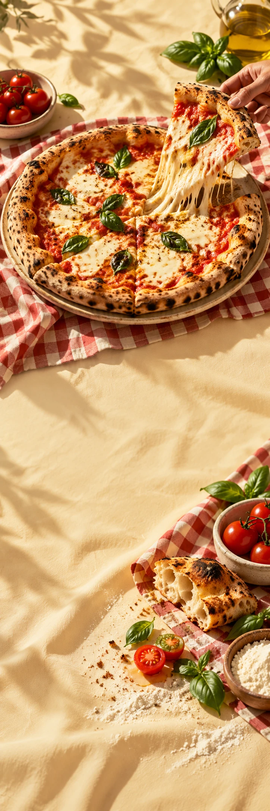

FORNO
HorecaMenucampagne
FORNO / SCHUIF MAAR AAN
NOG ÉÉN
PUNT DAN.
Bekijk het menu FORNO / VAN DICHTBIJ
Vuur. Deeg.
Goed gezelschap.
Een tafel vol handen. Een korst die kraakt. Iemand die vraagt of er nog een stukje is. Dat soort avonden dus. Bekijk wat er uit de oven komt.
01Uit de oven
02Op tafel
03Om te delen
PAK EEN STOEL.
EN EEN PUNT.
Voor avonden die niet aan de klok doen.
Bekijk het menu